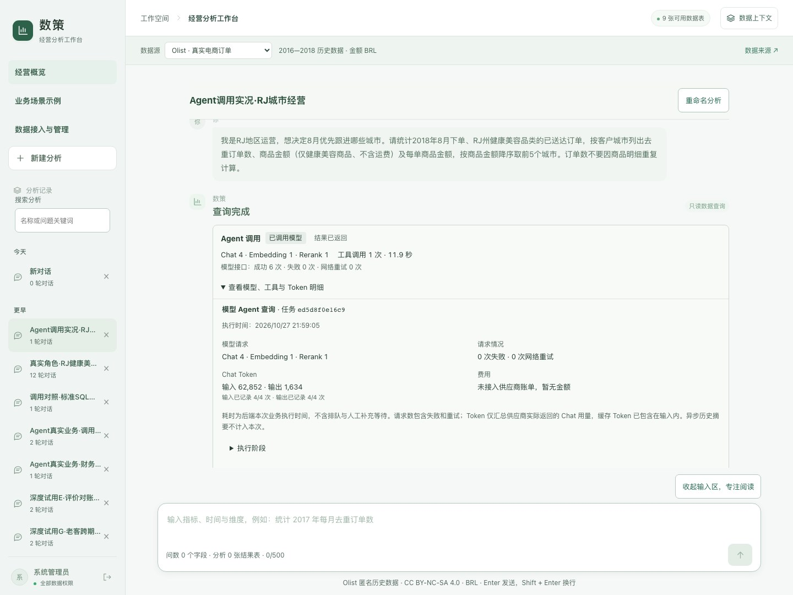
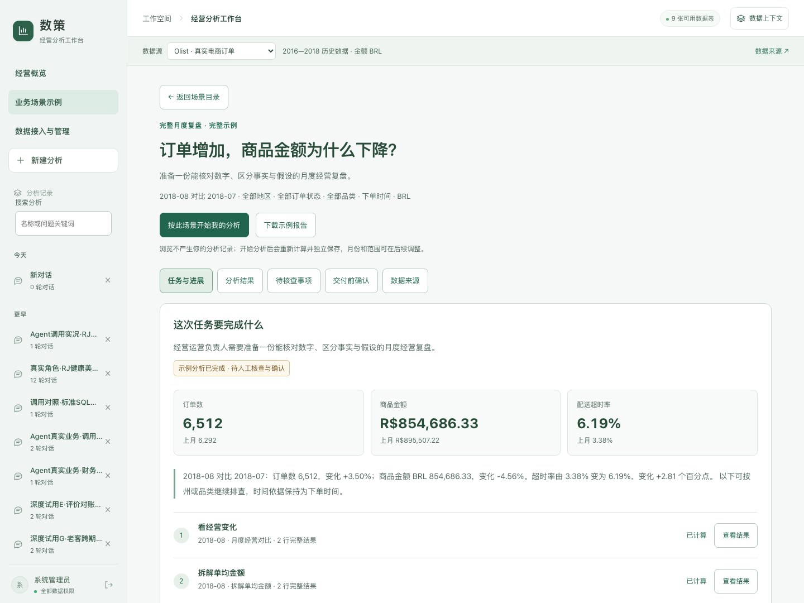

确定性流程与自由探索共存
标准复盘由后端 SQL 直接计算，便于稳定核对。自由问数保留模型检索与工具执行，给探索留空间，也要求说明范围。
数策 · 经营分析工作台
查数之后，还要解释变化、核对依据，再交付一份能继续修改的报告。数策把这些操作连在一起。
基于 AskData 代码包迭代，以 Olist 公开历史样本实跑。本人主导场景、取舍与试用反馈，使用 AI 辅助开发和验证。

为什么做数策
模拟业务人员准备月会时，反复遇到的并不是只有“怎么查数”：月份和范围会变，商品金额与支付金额会混，报告需要回看依据，临时离开后还要找回进度。
所以产品围绕一条任务链展开：确认数据与范围，定位变化，核对解释，交付材料，再次回来继续。任务地图、异常分支与体验台账用于推动下一轮开发。
月份、州、品类、状态与指标定义明确展示，无法保留的复杂条件要求补全。
结果保留 SQL 和快照；报告核查数字与范围，人工补充保留原始事实。
命名搜索分析、保存草稿、恢复历史，让已完成的核查不必重新做。
一份可核查的业务记录
统计 2018 年 8 月下单、RJ 州健康美容品类的已送达订单，按城市看去重订单数、商品金额和单均金额，降序取前五。
这里切换已保存的范围、结果和调用摘要，不会新发起模型请求。业务设定为模拟情境，聚合值来自公开真实历史数据。
这份数据没有商品成本，不能据此计算利润；金额排名也不能单独证明应优先干预哪座城市。
| 客户城市 | 订单数 | 商品金额 BRL | 单均金额 BRL |
|---|---|---|---|
| rio de janeiro | 44 | R$9,234.59 | R$209.88 |
| sao goncalo | 2 | R$1,013.00 | R$506.50 |
| sao joao de meriti | 1 | R$527.90 | R$527.90 |
| macae | 2 | R$485.00 | R$242.50 |
| teresopolis | 2 | R$348.08 | R$174.04 |
比较的是指定品类的商品金额。该核对只证明这一份结果，不代表任意自然语言问题均能正确理解。
下载这份结果 CSVWITH __ask_scope_products AS (SELECT p.product_id FROM olist_products_dataset AS p LEFT JOIN product_category_name_translation AS t USING (product_category_name) WHERE COALESCE(t.product_category_name_english, p.product_category_name, '未分类') IN ('health_beauty')), __ask_scope_orders AS (SELECT scope_o."order_id", scope_o."customer_id", scope_o."order_status", scope_o."order_purchase_timestamp", scope_o."order_approved_at", scope_o."order_delivered_carrier_date", scope_o."order_delivered_customer_date", scope_o."order_estimated_delivery_date" FROM olist_orders_dataset AS scope_o WHERE scope_o.order_status IN ('delivered') AND scope_o.customer_id IN (SELECT customer_id FROM olist_customers_dataset WHERE customer_state IN ('RJ')) AND STRFTIME(scope_o.order_purchase_timestamp, '%Y-%m') IN ('2018-08') AND scope_o.order_id IN (SELECT scope_i.order_id FROM olist_order_items_dataset AS scope_i WHERE (scope_i.product_id IN (SELECT product_id FROM __ask_scope_products)))), __ask_scope_items AS (SELECT scope_i."order_id", scope_i."order_item_id", scope_i."product_id", scope_i."seller_id", scope_i."shipping_limit_date", scope_i."price", scope_i."freight_value" FROM olist_order_items_dataset AS scope_i WHERE (scope_i.product_id IN (SELECT product_id FROM __ask_scope_products)) AND scope_i.order_id IN (SELECT order_id FROM __ask_scope_orders)), __ask_scope_olist_customers_dataset AS (SELECT scope_row."customer_id", scope_row."customer_unique_id", scope_row."customer_zip_code_prefix", scope_row."customer_city", scope_row."customer_state" FROM olist_customers_dataset AS scope_row WHERE scope_row.customer_id IN (SELECT customer_id FROM __ask_scope_orders)), __ask_scope_olist_products_dataset AS (SELECT scope_row."product_id", scope_row."product_category_name", scope_row."product_name_lenght", scope_row."product_description_lenght", scope_row."product_photos_qty", scope_row."product_weight_g", scope_row."product_length_cm", scope_row."product_height_cm", scope_row."product_width_cm" FROM olist_products_dataset AS scope_row WHERE scope_row.product_id IN (SELECT product_id FROM __ask_scope_items)), __ask_scope_product_category_name_translation AS (SELECT scope_row."product_category_name", scope_row."product_category_name_english" FROM product_category_name_translation AS scope_row WHERE scope_row.product_category_name IN (SELECT product_category_name FROM olist_products_dataset WHERE product_id IN (SELECT product_id FROM __ask_scope_items))), cat_orders AS (SELECT oi.order_id, SUM(oi.price) AS item_sales FROM __ask_scope_items AS oi JOIN __ask_scope_olist_products_dataset AS p ON oi.product_id = p.product_id JOIN __ask_scope_product_category_name_translation AS t ON p.product_category_name = t.product_category_name WHERE t.product_category_name_english = 'health_beauty' GROUP BY oi.order_id) SELECT c.customer_city, COUNT(DISTINCT o.order_id) AS order_count, ROUND(SUM(co.item_sales), 2) AS item_sales, ROUND(SUM(co.item_sales) / NULLIF(COUNT(DISTINCT o.order_id), 0), 2) AS sales_per_order FROM __ask_scope_orders AS o JOIN __ask_scope_olist_customers_dataset AS c ON o.customer_id = c.customer_id JOIN cat_orders AS co ON o.order_id = co.order_id WHERE o.order_purchase_timestamp >= CAST('2018-08-01 00:00:00' AS TIMESTAMP) AND o.order_purchase_timestamp < CAST('2018-09-01 00:00:00' AS TIMESTAMP) AND o.order_status = 'delivered' AND c.customer_state = 'RJ' GROUP BY c.customer_city ORDER BY item_sales DESC, c.customer_city ASC LIMIT 5实际模型为 deepseek-flash、text-embedding-v4、qwen3-rerank。4 次 Chat 均返回用量：输入 62,852、输出 1,634 Token。
请求次数来自真实请求边界；Token 不是费用账单。标准 SQL 路径可不调用模型，旧记录未采集的用量则显示未知。
打开脱敏执行摘要正在查看确认范围
标准复盘由后端 SQL 直接计算，便于稳定核对。自由问数保留模型检索与工具执行，给探索留空间，也要求说明范围。
数值或范围校验未通过时明确提示业务未完成，保留已执行结果。人工补充与模型生成分别标注，避免混淆交付状态。
结果快照承接完整分页与导出；未保存报告草稿可恢复。任务进度和待核查事项帮助使用者回到下一步。

自由问数包含 BM25、Embedding、RRF 与 Rerank；执行前按用户和数据源限定工具范围。实际模型与工具事件汇入调用记录，报告再校验引用的数字与口径。
v13 记录为 180 项后端、14 项前端流程及构建通过。本轮发布副本另行验证，完整记录在仓库中。
城市查询 5 行与独立 SQL 一致。前轮区域月会连续跑了 12 次任务、45 次模型请求，并保留反例。
Agent 模拟业务角色实际操作，没有冒充外部用户研究。测试数量不是用户数，也没有编造节省工时。
一次区域月会试用中，模型 HTTP 全部成功，自动报告却两次未通过数值或范围校验，指定图文材料没有完成；另外已复现选择 6 份报告来源、上下文只使用 5 份的问题。
下一步先修复报告与来源选择，再观察真实业务人员完成一次复盘，确认产品是否减少重复核对和重做。当前完整产品只在可信本地环境运行，默认演示账号不能直接用作公网身份体系。